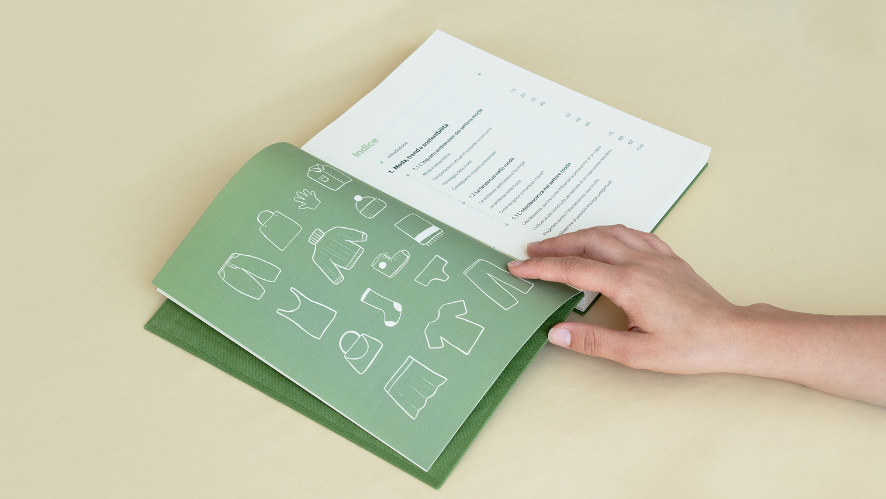
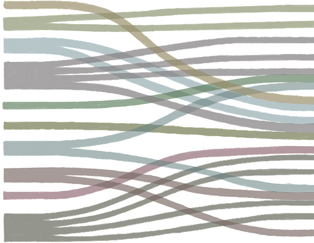
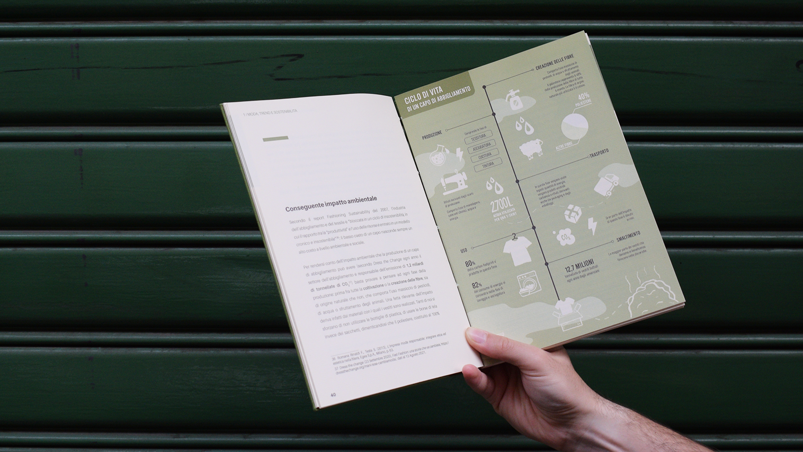
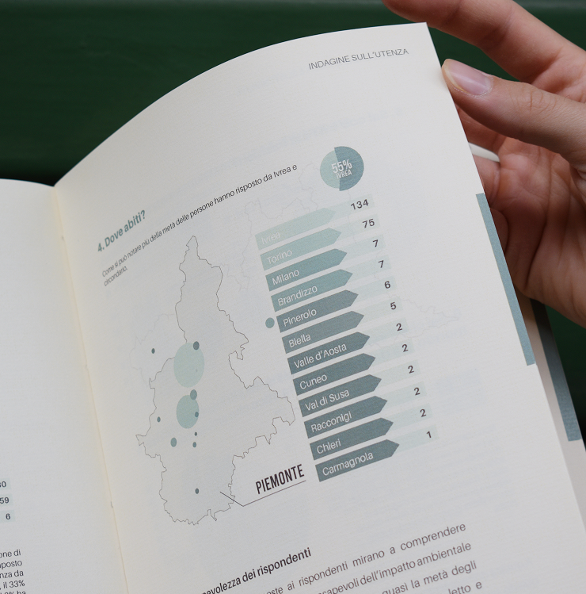
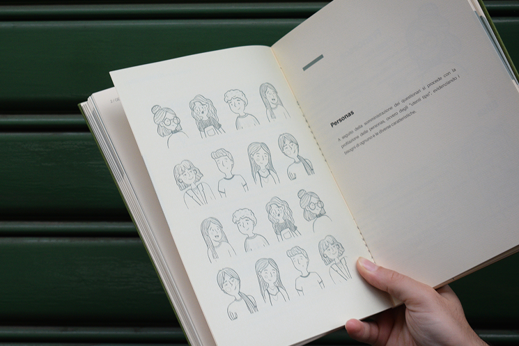
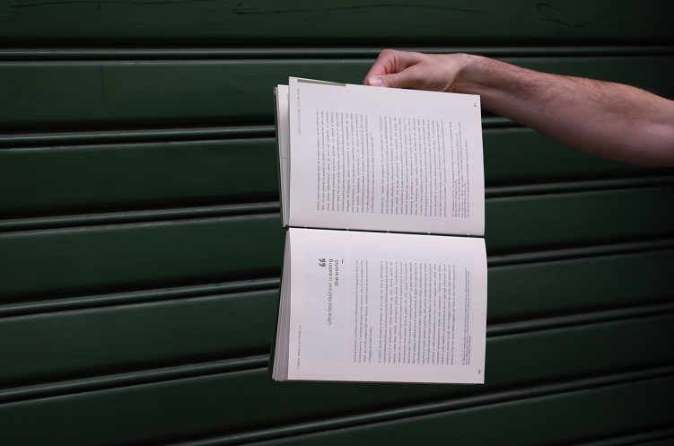

Can the trends that today's fashion system is built on coexist with sustainability? How much do they influence Generation Z
when buying new clothes?
The topic was explored in three phases:
\ literature review and data research;
\ analysis aimed at understanding user behavior;
\ definition of guidelines for Generation Z,
to help shape an innovative and conscious fashion experience,
in pursuit of sustainable development.

Through fashion, people
find their place in the world they live in.
Defining it only as a succession
of passing trends means denying its role in human evolution. In recent years, however,
a consumption model has emerged that has made
the industry completely unsustainable.




